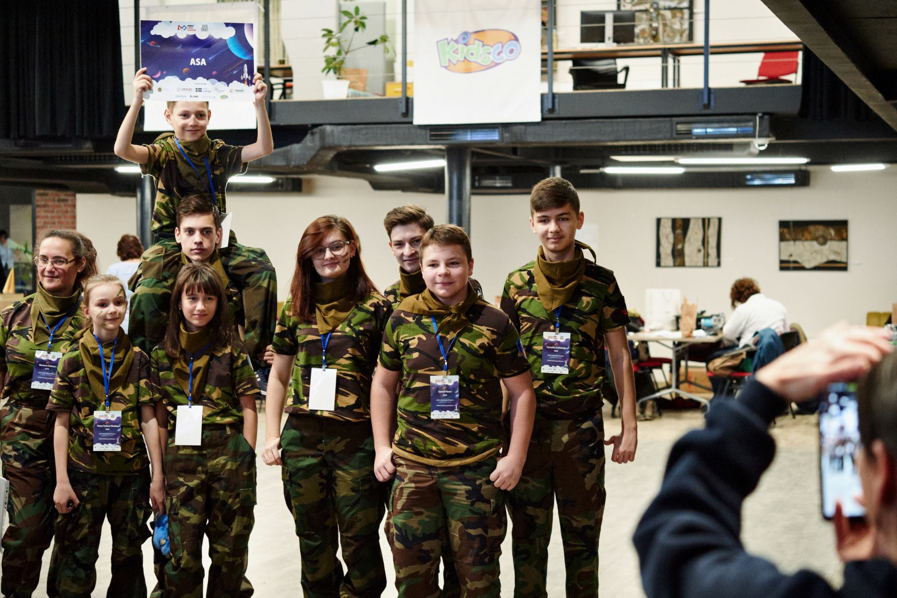
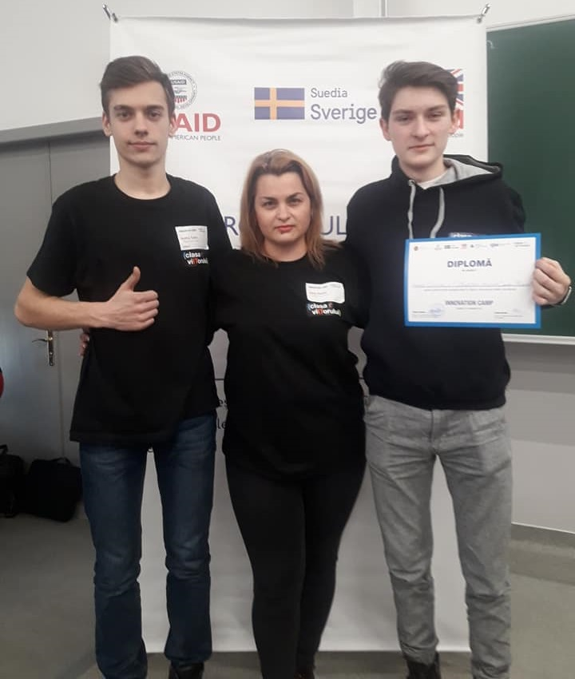
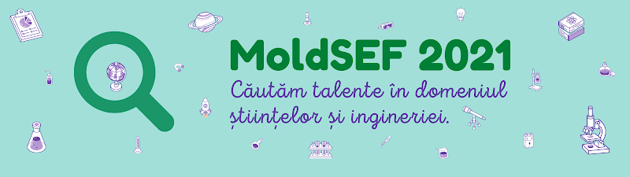

Evenimente
FLL
FIRST LEGO League este cea mai importantă competiție în domeniul tehnologiei și roboticii şi este dedicată copiilor și adolescenților de 9-16 ani.
- Lecții publice
- Activități extracurriculare
- Concursuri
Innovation Camp

Evenimentul a fost organizat în cadrul Universității Tehnice din Moldova și susținut de Proiectul de Competitivitate din Moldova, finanțat de Agenția Statelor Unite pentru Dezvoltare Internațională (USAID), Guvernul Suediei și UK Aid,
în colaborare cu organizația Junior Achievement Moldova (JA) și Universitatea Tehnică a Moldovei (UTM).
Echipele au fost evaluate după următoarele criterii:
- Relevanța soluției pentru problema propusă;
- Caracterul inovator al ideii;
- Fezabilitatea soluției;
- Justificarea utilizării tehnologiei pentru rezolvarea problemei propuse;
- Modul de prezentare și argumentare a soluției în fața juriului.
Conferință științifico-practică
Anual are loc cea mai provocatoare, Conferință științifico-practică pentru elevii claselor a V-XII-a,
din cadrul liceului „Gheorghe Asachi”, „Cercetători asachieni în devenire”.
În anul 2019, la a III-a ediție a aceastei conferințe, Clasa Viitorului a fost gazda atelierului
fizică-chimie-informatică.
Printre temele conferinței au fost: „Reacții nucleare”, „Radiație Gamma”,
„Rayons X” , „3D imprimante în lumea modernă” și „Sunetul și aplicațiile lui”.
Pe parcursul întregului eveniment, participanții la atelierul fizică-chimie-informatică,
au putut explora echipamentul și posibilitățile oferite de Clasa Viitorului.
Concursul Mold-Sef
Moldova ISEF îşi propune identificarea şi dezvoltarea abilităţilor creative ale elevilor, precum şi sporirea interesului pentru studiul matematicii, fizicii, informaticii, chimiei, biologiei şi ştiinţelor naturale, ştiinţelor tehnice şi de inginerie, popularizarea cunoştinţelor ştiinţifice, creşterea competenţelor pedagogice ale cadrelor didactice participante la Concurs, implementarea unor metode inovatoare şi tehnologii educaţionale în instituţiile de învăţământ din Republica Moldova.